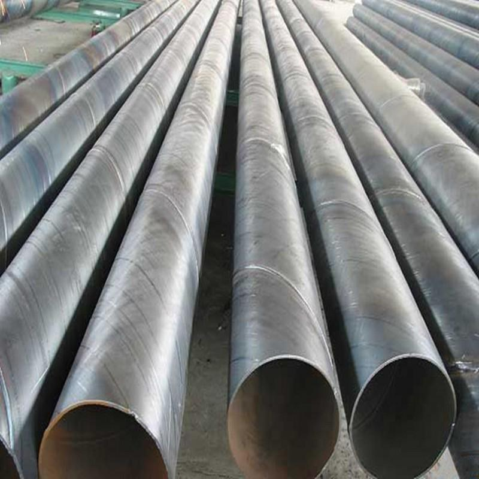

螺旋管价格管出口的下滑加重对后市的悲观情绪

中钢协最新数据,6月下旬国际重点热镀锌螺旋钢管日均产量较上一旬大降8%以上,创出2014年4月上旬以来的最低程度。同时,6月下旬末重点钢企钢材的库存量也有所下降。虽然这组数据稍有缓解供需失衡压力,但是市场低迷的行情仍难改动。在之前刚上任的住建部部长也表示过下半年楼市定调去库存为主。近期发布的114家上市房企的年报显示，上半年有过半房企业绩下滑，其中少数企业完成年总目的低于50%，一般亦不到30%。上市房企业绩都这样了，何况是其他企业呢。业内人士称，关于年中表现较差的房企，接上去将会加大促销、降价等力度来去库存，放慢资金回转以完成年终目的。螺旋管价格，而不少资金绝对较雄厚或早已定位转型的房企曾经开端加大副业的开展，以防止在主营业务上耗死，切断资金流。
端午节前一周，钢市自始自终的冷落，并无传统的节前备货气氛；钢铁需求的淡化、钢厂消费的增产，本钱的持续跳水，是乎都缺乏以引发市场太多的变化，犹如迟暮的老人，蹒蹒珊珊的持续前行。近期钢价下行不时，然热镀锌螺旋钢管出口的下滑减轻对后市的失望心情。虽然，总体来看我国钢材出口总量上占我国粗钢总产量的比例较小，但是这一局部小小的出口量却能为国际市场分担不少的流量。但是从6月份钢材出口状况来看，较上月有所增加，6月份至7月份，在国际需求最空缺的时段，出口量还有所增加，这关于钢市来说无疑是雪上加霜的。6月份，国际需求曾经令人不堪回首了，不论是制造业还是其他下游行业，都依然在走弱。受微观经济增速回落影响，市场决心缺乏，国际市场钢价仍然疲软，前期热镀锌螺旋钢管价钱仍将呈动摇下跌走势。钢价减速探底，为清库存。钢厂加大向市场让利幅度，使得盈利空间持续收窄，受此影响，带动局部钢厂增产限产举措有所增强，其消费热情分明回落。据中钢协最新数据显示，重点钢企6月下旬粗钢日产量为167.68万吨，旬环比大降8.35%。剖析师指出，下游需求疲软、钢厂盈利收窄虽然是增产的直接导火索；然真正的应该表现在资金压力上，重庆防腐螺旋钢管厂回款困难，银行持续限贷、螺旋管价格。抽贷，少数钢厂活动资金无限缺乏以支撑高位消费活动，纷繁暂停消费线，增加消费运营压力。
推荐产品


相关推荐
随机推荐
- 天津螺旋钢管市场价格小幅下降20元
- 琼海包钢产壁厚8的SY/T5037-2000排水用大口径螺旋钢
- 11月27日屏東縣汽车用壁厚70的给排水螺旋钢管现
- 9月22日螺旋管厂产外径1320壁厚10mm钢管多少钱一吨
- 螺旋钢管价格货源渠道已不是关键资源
- 大口径螺旋钢管价格，退磁的几种方法
- 天津市万盛华业钢铁制造有限公司从6月左右开始
- 大邱庄市场螺旋钢管价格 暂稳 成交一般
- 成都4月1日汽车半轴套管用外径180的Q235A碳钢螺旋
- 连云港1月17日中钢联产外径325的Q235A直缝螺旋钢管
- 5月10日现货库存500*18的20#防静电防腐螺旋钢管后
- 政策预期较弱，螺旋管厂投资者信心不足
- 西宁善于专门加工制造X46大口径螺旋钢管理论重
- 螺旋钢管价格倒挂数百元造成钢贸商大范围亏损
- 在18大召开期间中国螺旋管规格市场供需关系也没
- 螺旋钢管价格 常州螺旋管：价格暂稳&
- 崇左中钢联产外径750的X60螺旋缝埋弧焊钢管是几
- 大口径螺旋钢管价格行情大口径螺旋钢管尺寸精
- 重庆q345c螺旋钢管 重庆L245螺旋钢管 重庆Q235A螺旋
- 呼和浩特供应螺旋钢管厂家 呼和浩特螺旋焊接钢
- 大庆打桩用螺旋管 大庆镀锌螺旋钢管 大庆螺旋管
- 螺旋钢管在国民经济中的应用范围极为广泛
- 铁矿石涨近5% 内盘期货全线飘红
- 20号厚壁螺旋钢管碳素结构钢板与标准
- 天津精密Q345B螺旋钢管单位重量表
- 临汾薄利多销820*40的镀锌螺旋钢管长度允许偏差
- 螺旋钢管的优缺点
- 螺旋钢管价格|螺旋钢管的防腐制作方法以及配管
- 螺旋管厂天津螺旋管规格型号
- 市场需求复苏，螺旋管厂进出口数据或创新高
重点推荐
- 螺旋管厂在制作螺旋焊管过程中,需要主意的问题
- 波段和趋势共振对螺旋钢管价格有不可预计的推
- 广东Q345b螺旋管 广东X42螺旋管 广东16锰螺旋钢管
- 天津螺旋钢管市场价格小幅下降20元
- 不同板厚及不同环境温度下16Mn钢的预热温度
- 螺旋管厂、螺旋钢管价格交货技术条件
- 沈阳购买螺旋钢管 沈阳螺旋钢管生产工艺 沈阳螺
- 云南螺旋钢管图片 云南排水用螺旋钢管 云南螺旋
- 安庆购买螺旋钢管 安庆螺旋钢管生产工艺 安庆螺
- 天津螺旋管厂-节能减排效力显现
- 南昌生产钢管 南昌钢管壁厚标准 南昌钢
- 外贸16锰钢管 外贸Q235A螺 外贸L245钢管
- 大庆Q235A螺旋管 大庆q345c螺旋钢管 大庆Q345b螺旋管
- Q235B螺旋管生产工艺Q235B螺旋管的特点
- 螺旋钢管按用途分为
- 成都保温螺旋钢管 成都16锰螺旋钢管 成都
- 螺旋管的外径,内径,相邻螺旋间距约为多少算标准
- 黄冈GB/T9711螺旋管 黄冈螺旋钢管市场 黄冈l360螺旋
- 什么是螺旋缝钢管|Q235螺旋钢管工艺流程
- “2012世界末日”之后能否也让螺旋钢管劫难重生